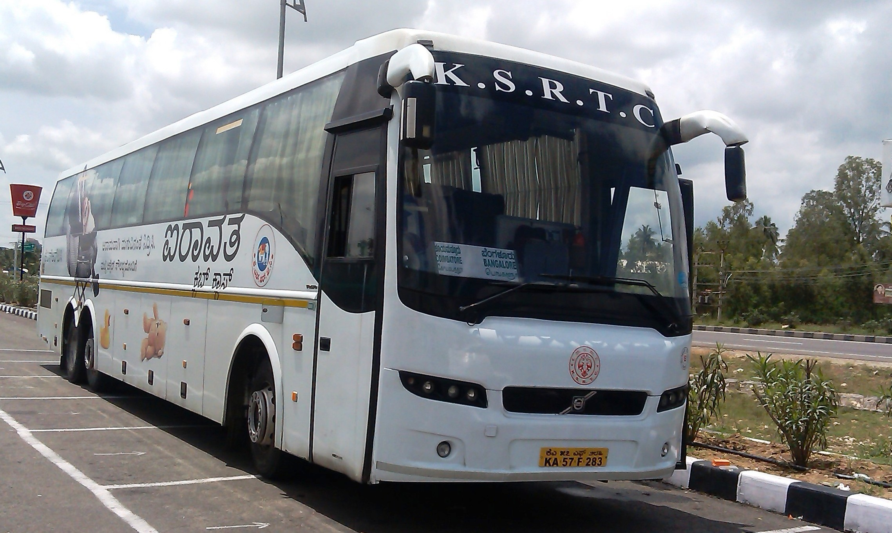

Get your booking, seat, coach and chart status instantly — no login needed.
Not just trains — check any booking in one place.
Enter your ticket number and registered mobile number.
Enter your 6 character booking reference and last name.
Where to find your booking number.
| Mode | Reference | Format | Where to find it |
|---|---|---|---|
| Train | PNR number | 10 digits | e-ticket, SMS and email |
| Bus | Ticket number | Letters + digits (e.g. BT123456) | SMS from the operator and your e-ticket |
| Flight | Booking reference (PNR) | 6 letters / digits (e.g. AB12CD) | Airline confirmation email and e-ticket |

Know whether your seat is confirmed and where to board.
See if your flight is ticketed and on time.
Your berth or seat is confirmed with coach and seat number.
Your ticket moves up as confirmed passengers cancel.
Reservation Against Cancellation – you get a shared seat to travel.
Three simple steps to know your ticket status.
It is printed on your e-ticket, SMS and email.
Type the number in the box above.
See coach, seat and chart status instantly.
Ticket booked with CNF, RAC or WL status.
Waitlist moves up as passengers cancel.
First chart is prepared before departure.
Final chart decides your confirmation.
What each status in your ticket means.
| Code | Full form | Meaning |
|---|---|---|
| CNF | Confirmed | Seat/berth allotted with coach and seat number |
| RAC | Reservation Against Cancellation | Shared berth; may upgrade to full berth |
| GNWL | General Waiting List | Waitlist from the originating station |
| RLWL | Remote Location Waiting List | Waitlist for intermediate stations |
| PQWL | Pooled Quota Waiting List | Waitlist for pooled quota, lower confirmation chance |
| RSWL | Roadside Waiting List | Waitlist for roadside stations |
| TQWL | Tatkal Waiting List | Waitlist under Tatkal quota |
Train number, name, date and class of travel.
Boarding, destination and reservation upto points.
Booking and current status for every passenger.
Whether the final chart has been prepared.